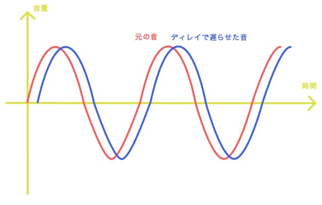
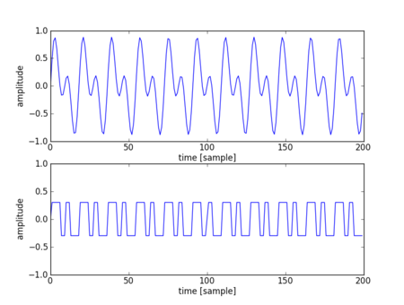
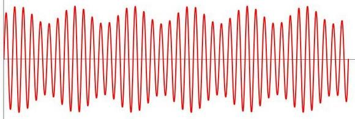
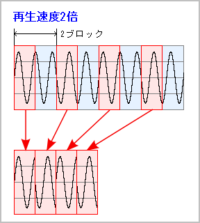
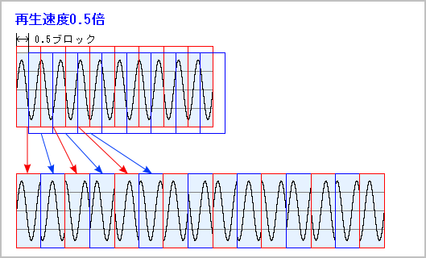
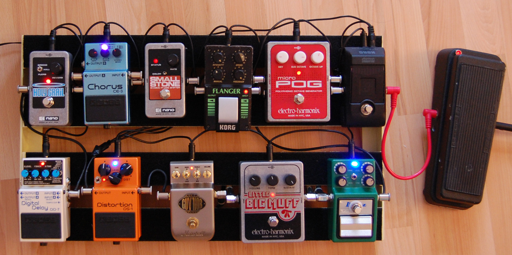

実践サウンドエフェクト
目次
1 音を加工してみる

図1: iPhoneアプリ「SmackTalk!」
iPhoneが発売された直後ぐらいに流行った SmackTalk! というアプリを知ってますか?? 画面の動物に向かって話しかけると、動物がオウム返しをしてくれるというアプリです。
オウム返しの声は動物によって少しピッチが速くなってたり、遅くなってたりでなんとも愛くるしく(憎らしく??)、癒されます。まさに、音声入力機能のあるiPhoneならではのアプリです。
これらの効果はどうやっているのでしょう?? iPhoneに用意された機能を使って…ではなく、録音した波形データを逐次プログラムで加工することで実現しています。プログラムで実現しているのなら、みんなの出番です!! 冒頭で紹介したようなアプリが自分で作れたら、とても楽しそうですよね!!
2 ディレイ
お風呂で鼻歌を歌うと、妙に上手くなったような気がしませんが?? これは周囲の壁に音が反射して響く 残響音 の効果でリッチに聞こえているからです。似たような効果に やまびこ があります。
ディレイ効果を得るには、元の波形に、少し遅れて同じ波形を重ねてゆきます。それを何度も繰り返すと、お風呂場で歌っている時のようなあの残響音が得られるという寸法なのですね。

図2: ディレイ効果の概略
// ディレイ // input_samples 加工する波形データ // attenuation 減衰率(0.0 ~ 1.0) // time 遅延時間(秒) // repeat 繰り返し回数 std::vector<ALshort> delay(std::vector<ALshort>& input_samples, float attenuation, float time, int repeat) { // 結果を格納する変数 std::vector<ALshort> output_samples(input_samples.size()); // TODO:SAMPLING_RATEは元波形のサンプリングレートに併せて適時定義のこと // 波形のサンプリングレートが44.1kHzなら // const int SAMPLING_RATE = 44100; // などと定義 float d = SAMPLING_RATE * time; for (size_t n = 0; n < input_samples.size(); ++n) { output_samples[n] = input_samples[n]; for (int i = 1; i <= repeat; ++i) { // 過去の波形の位置 int m = int(n - i * d); if (m >= 0) { // 過去の音データをミックスする // 波形の減衰にはべき乗を使っている output_samples[n] += std::pow(attenuation, float(i)) * input_samples[m]; } } } return output_samples; }
さあ、どうなりました?? お風呂で歌っているような効果になりましたか?? うまくプログラムが動作したら、以下の課題に挑戦してみましょう。
- 減衰率、遅延時間、繰り返し回数を色々と変えて、効果の違いを確かめる
3 ディストーション
エレキギター特有の歪んだ音色。ギターキッズなら誰もが憧れますよね。これは ディストーション とか オーバードライブ と呼ばれ、エレキギターを代表的する効果だと思います。
これは意図的に波形を歪ませて得られる音色で、比較的簡単にプログラムで実装することができます。

図3: ディストーション効果の概略
// ディストーション // input_samples 加工する波形データ // gain 持ち上げる量(0.0 ~) // level 音量(0.0 ~ 1.0) std::vector<ALshort> distortion(std::vector<ALshort>& input_samples, float gain, float level) { std::vector<ALshort> output_samples; // 波形データを１つ１つ増幅 for (ALshort sample : input_samples) { // 値を増幅 float new_sample = sample * gain; // クリッピング // TIPS:最大値と最小値は量子化ビット数に基づく new_sample = std::min(new_sample, 32760.0f); new_sample = std::max(new_sample, -32760.0f); output_samples.push_back(ALshort(new_sample * level)); } return output_samples; }
さあ、どうなりました?? エレキギターな感じに歪みました?? うまくプログラムが動作したら、以下の課題に挑戦してみましょう。
- levelやgainを色々と変えて、音の違いを確認する
ちなみにオーバードライブはこんな感じになるそうです。 波形を意図的に歪ませている点は共通しているのですが、 その歪ませ方にコツとノウハウがある ようで、なかなかに奥の深い分野ですね。
// オーバードライブ // input_samples 加工する波形データ // gain 持ち上げる量(0.0 ~) // level 音量(0.0 ~ 1.0) std::vector<ALshort> overdrive(std::vector<ALshort>& input_samples, float gain, float level) { std::vector<ALshort> output_samples; // 波形データを１つ１つ増幅 for (ALshort sample : input_samples) { // 値を増幅 float new_sample = sample * gain; // クリッピング // TIPS:計算の結果、値は -1.0 ~ 1.0 の範囲内に収まる if (new_sample >= 0.0f) { new_sample = std::atan(new_sample) / (M_PI / 2.0); } else { new_sample = std::atan(new_sample) / (M_PI / 2.0) * 0.1f; } // 値をALshort型の最大値に合わせている output_samples.push_back(ALshort(new_sample * level * 32767.0f)); } return output_samples; }
4 トレモロ
トレモロは、同じ高さの音を小刻みに連続して演奏する手法です。転じて 周期的に音量を変化させる効果 を指すようになりました。 楽器によってトレモロの定義はまちまちですが、今回は周囲的に音量を変化させる手法をプログラムで試してみましょう。

図4: 正弦波にトレモロ効果をつけてみた例
// トレモロ // depth 深さ // rate 周期(Hz) std::vector<ALshort> tremolo(std::vector<ALshort>& input_samples, float depth, float rate) { std::vector<ALshort> output_samples; for (size_t n = 0; n < input_samples.size(); ++n) { float a = 1.0 + depth * std::sin(2.0 * M_PI * rate * n / SAMPLING_RATE); output_samples.push_back(a * input_samples[n]); } return output_samples; }
うまくトレモロ効果が掛かりましたか?? うまく動いたら、以下の課題に挑戦してみましょう!!
- 深さと周期を色々と変えてみて、どのように効果が変化するか確認する
5 ビブラート
図5: 「加賀岬」を熱唱中の加賀さん
よく 演歌でこぶしを利かせる といいますが、あれがまさしくビブラートです。トレモロは音量の周期的な変化でしたが、 ビブラートは音程の周期的な変化 なのです。
// ビブラート // d_time 遅れ(秒) // depth_time 深さ(秒) // rate 周期(Hz) std::vector<ALshort> vibrato(std::vector<ALshort>& input_samples, float d_time, float depth_time, float rate) { std::vector<ALshort> output_samples; // TODO:SAMPLING_RATEは元波形のサンプリングレートに併せて適時定義のこと float d = d_time * SAMPLING_RATE; float depth = depth_time * SAMPLING_RATE; for (size_t n = 0; n < input_samples.size(); ++n) { float tau = d + depth * std::sin(2.0 * M_PI * rate * n / SAMPLING_RATE); float t = n - tau; int m = int(t); float delta = t - m; if ((m >= 0) && ((m + 1) < input_samples.size())) { output_samples.push_back(delta * input_samples[m + 1] + (1.0 - delta) * input_samples[m]); } } return output_samples; }
加賀さんよろしく演歌でこぶしを効かせているような効果が出ましたか?? プログラムがうまく動いたら、以下の課題に挑戦!!
- 遅れ、深さ、周期を色々と変えてみて、どのように効果が変化するか確認する
6 早送り
続いて、波形の再生時間を自在に変える タイムストレッチ に挑戦してみましょう。
OpenALでは再生ピッチを変化させると、早送りやスロー再生っぽい事ができました。 では 音程を変えない早送り はどうやって実現すれば良いのでしょう。 これがなかなかに難易度が高い。 今回紹介するプログラムでは、波形全体を少しずつ切り詰めていくことで擬似的に 音程を変えない早送り を実現しています。

図6: 早送りの概略図
// 早送り // rate 度合い(1.0より大きい値) std::vector<ALshort> fastForwarding(std::vector<ALshort>& input_samples, float rate) { std::vector<ALshort> output_samples(input_samples.size() * rate + 1); int template_size = SAMPLING_RATE * 0.01f; int pmin = SAMPLING_RATE * 0.005f; int pmax = SAMPLING_RATE * 0.02f; std::vector<int> x(template_size); std::vector<int> y(template_size); std::vector<int> r(pmax + 1); int offset0 = 0; int offset1 = 0; while (offset0 + pmax * 2 < input_samples.size()) { for (int n = 0; n < template_size; ++n) { // 本来のデータ x[n] = input_samples[offset0 + n]; } float max_of_r = 0.0f; int p = pmin; for (int m = pmin; m <= pmax; ++m) { for (int n = 0; n < template_size; ++n) { // mサンプルずらした音データ y[n] = input_samples[offset0 + m + n]; } r[m] = 0.0; for (int n = 0; n < template_size; ++n) { // 相関関数 // -32768 ~ 32767 の範囲の値同士の掛け算を // 結果も-32768 ~ 32767の範囲に収まるようにしている r[m] += (x[n] * y[n]) / 32768; } if (r[m] > max_of_r) { max_of_r = r[m]; // 相関関数のピーク p = m; // 音データの基本周期 } } for (int n = 0; n < p; ++n) { // 単調減少の重みづけ output_samples[offset1 + n] = input_samples[offset0 + n] * (p - n) / p; // 単調増加の重みづけ output_samples[offset1 + n] += input_samples[offset0 + p + n] * n / p; } int q = int(p / (rate - 1.0) + 0.5); for (int n = p; n < q; ++n) { if (offset0 + p + n >= input_samples.size()) { break; } output_samples[offset1 + n] = input_samples[offset0 + p + n]; } offset0 += p + q; offset1 += q; } return output_samples; }
いい感じに早送り感はでましたか?? プログラムがうまく動いたら、以下の課題に挑戦!!
- 早送りの度合いを色々変えて、効果を確かめる
7 スロー再生
早送りと違い、少しずつ波形を引き延ばす処理をおこなえば、音程はそのままでスロー再生がおこなえます。

図7: スロー再生の概略図
// スロー再生 // rate 度合い(0.5以上、1.0未満) std::vector<ALshort> slowForwarding(std::vector<ALshort>& input_samples, float rate) { std::vector<ALshort> output_samples(input_samples.size() / rate + 1); int template_size = SAMPLING_RATE * 0.01f; int pmin = SAMPLING_RATE * 0.005f; int pmax = SAMPLING_RATE * 0.02f; std::vector<int> x(template_size); std::vector<int> y(template_size); std::vector<int> r(pmax + 1); int offset0 = 0; int offset1 = 0; while (offset0 + pmax * 2 < input_samples.size()) { for (int n = 0; n < template_size; ++n) { // 本来のデータ x[n] = input_samples[offset0 + n]; } float max_of_r = 0.0f; int p = pmin; for (int m = pmin; m <= pmax; ++m) { for (int n = 0; n < template_size; ++n) { // mサンプルずらした音データ y[n] = input_samples[offset0 + m + n]; } r[m] = 0.0; for (int n = 0; n < template_size; ++n) { // 相関関数 // -32768 ~ 32767 の範囲の値同士の掛け算を // 結果も-32768 ~ 32767の範囲に収まるようにしている r[m] += (x[n] * y[n]) / 32768; } if (r[m] > max_of_r) { max_of_r = r[m]; // 相関関数のピーク p = m; // 音データの基本周期 } } for (int n = 0; n < p; ++n) { output_samples[offset1 + n] = input_samples[offset0 + n]; } for (int n = 0; n < p; ++n) { // 単調減少の重みづけ output_samples[offset1 + p + n] = input_samples[offset0 + p + n] * (p - n) / p; // 単調増加の重みづけ output_samples[offset1 + p + n] += input_samples[offset0 + n] * n / p; } int q = int(p * rate / (1.0 - rate) + 0.5); for (int n = p; n < q; ++n) { if (offset0 + n >= input_samples.size()) { break; } output_samples[offset1 + p + n] = input_samples[offset0 + n]; } // offsetの更新 offset0 += q; offset1 += p + q; } return output_samples; }
いい感じにスロー感はでましたか?? プログラムがうまく動いたら、以下の課題に挑戦!!
- スロー再生の度合いを色々変えて、効果を確かめる
8 ピッチ変更
続いて、音の高さを変更する効果を作ってみましょう。
// ピッチ変更で使う関数 float sinc(float x) { float y; if (x == 0.0) { y = 1.0; } else { y = sin(x) / x; } return y; } // ピッチ変更 // pitch 度合い (1.0より大きいと高くなる) std::vector<ALshort> pitch(std::vector<ALshort>& input_samples, float pitch) { std::vector<ALshort> output_samples(input_samples.size() / pitch, 0); int j = 24; for (int n = 0; n < output_samples.size(); ++n) { float t = pitch * n; int offset = int(t); for (int m = offset - j / 2; m <= offset + j / 2; ++m) { if ((m >= 0) && (m < input_samples.size())) { output_samples[n] += input_samples[m] * sinc(M_PI * (t - m)); } } } return output_samples; }
プログラムがうまく動いたら、以下の課題に挑戦!!
- ピッチの度合いを色々変えて、効果を確かめる
9 ボイスチェンジャ
カラオケなどでよく見かけるボイスチェンジャーも作ってみましょう。
// ボイスチェンジャ // depth 深さ // rate 周期(Hz) std::vector<ALshort> voiceChanger(std::vector<ALshort>& input_samples, float depth, float rate) { std::vector<ALshort> output_samples; // TODO:元波形のサンプリングレートに併せてSAMPLING_RATEを適時定義すること for (int n = 0; n < input_samples.size(); ++n) { float a = depth * std::sin(2.0 * M_PI * rate * n / SAMPLING_RATE); output_samples.push_back(a * input_samples[n]); } return output_samples; }
…おや?? 以前入力したプログラム によく似ていませんか?? 気のせい??
プログラムがうまく動いたら、以下の課題に挑戦!!
- 深さ、周期の度合いを色々変えて、効果を確かめる
10 音の加工を組み合わせる

図8: ギターのエフェクターを連結した様子
これまで追加してきた効果を組み合わせて、 自分だけの特別な効果 を生み出してみましょう。 同じ効果を何度も重ねる のもありです。 やったもん勝ち!!
時間に余裕がある人は、冒頭で紹介したアプリのような、可愛らしい絵を表示してみたりと、見た目にも凝ってみましょう!!